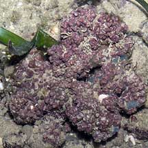
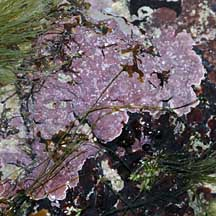
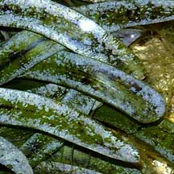
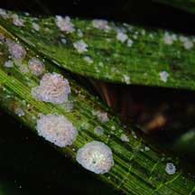
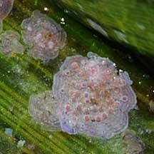
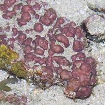
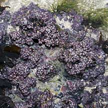
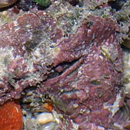
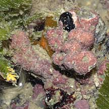
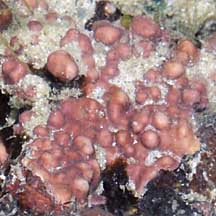

|
|
|
red
seaweeds text index
| photo index
|
| Seaweeds > Division Rhodophyta |
| Encrusting
coralline red seaweed Family Corallinaceae updated Sep 2019 Where seen? Thin pink layers of these algae are commonly seen encrusting stones, coral rubble and other hard surfaces, especially on our Southern shores. Features: This algae covers hard surfaces in a thin, hard slow growing layer. It grows on things like stones, coral rubble, litter such as discarded bottles and washed up pieces of wood. It even coats the shells of living snails and shells occupied by hermit crabs. As well as seagrass leaves. The algae incorporates calcium carbonate and is hard and stony. It is thus also called encrusting calcareous algae. Colours from rose pink, salmon to pale pink and purplish. May be white when bleached. Encrusting pinkish seaweeds may belong to several groups including: Mesophyllum from Family Hapalidiaceae and Hydrolithon species from Family Corallinaceae. Role in the habitat: By growing over bits and pieces, this seaweed is literally the cement of the reef, stabilising the reef structure. Thus providing shelter for reef dwellers. This role is especially important in places where the currents or wave action are too strong for hard corals to grow well. In such places, coralline algae fortify and reinforce the reefs, reducing erosion. Although they don't look very tasty, some young animals such as lobsters may eat a great deal of coralline algae. Coralline algae are also thought to induce settlement and recruitment of invertebrates. Studies suggest young abalones, some corals and soft corals prefer to settle in areas where coralline algae can be found. There are also suggestions that the presence of coralline algae suppresses the growth of other kinds of seaweeds which may otherwise smother a reef. Elsewhere, some species can grow unattached (called rhodoliths) forming extensive localised beds, made up of thousands of individuals. |
 Encrusting dead coral. Sentosa, Jun 05 |
 Encrusting a rock. Sisters Island, Jan 10 |
|
 The whitish stuff that grows on seagrass leaves is probably also coralline algae Labrador, Oct 04 |
 Encrusting seagrasses. Sentosa, Oct 08 |
 |
*Seaweed species are difficult to positively identify without microscopic examination.
On this website, they are grouped by external features for convenience of display.
| Encrusting coralline red seaweed on Singapore shores |
On wildsingapore
flickr
|
| Other sightings on Singapore shores |
 Lazarus Island, Feb 11 |
 Sisters Islands, Jan 10 |
Sisters Islands, Jan 10 |
 Pulau Senang, Aug 10 |
 Terumbu Bemban, Jun 10 |
 Pulau Pawai, Dec 09 |
| Hydrolithon
species recorded for Singapore Pham, M. N., H. T. W. Tan, S. Mitrovic & H. H. T. Yeo, 2011. A Checklist of the Algae of Singapore.
Mesophyllum species recorded for Singapore Pham, M. N., H. T. W. Tan, S. Mitrovic & H. H. T. Yeo, 2011. A Checklist of the Algae of Singapore.
|
Links
References
|